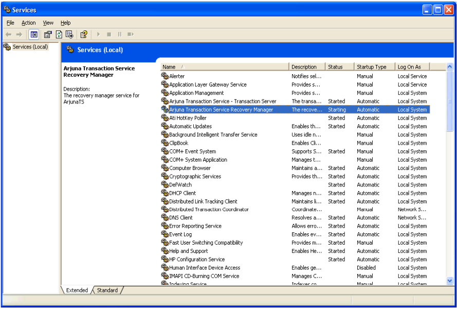

There are four scripts provided which will install/uninstall the recovery manager and transaction server services, these files can be found in Services\bin\windows. You must be logged in as an administrator or have administrator privileges to install and uninstall services.
-
Recovery Manager
-
InstallRecoverymanagerService-NT.bat - running this script will install the Recovery manager as a Windows service.
-
UninstallRecoveryManagerService-NT.bat - running this script will uninstall the Recovery Manager as a Windows service
-
Transaction Service
-
InstallTransactionServerService-NT.bat - running this script will install the Transaction Manager as a Windows service.
-
UninstallTransactionServerService-NT.bat - running this script will uninstall the Transaction Server as a Windows service.
-
After running one of the scripts, you should see a message that indicates its success or failure.
-
The service should also be visible in the services list from the Control Panel.
